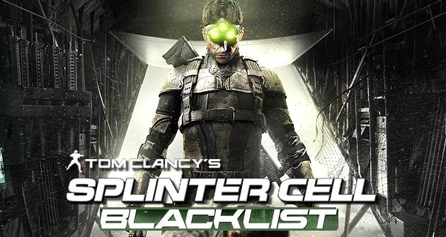

Splinter Cell: Blacklist (En español Splinter Cell: Lista Negra) es un videojuego perteneciente al género de acción, aventura y sigilo desarrollado por la empresa Ubisoft Toronto y distribuido por Ubisoft. Es la sexta entrega de la saga Splinter Cell y es la secuela directa de Tom Clancy's Splinter Cell: Conviction. Fue lanzado para Microsoft Windows, PlayStation 3, Wii U y Xbox 360.
Free Fire es un juego móvil donde los jugadores ingresan a un campo de batalla donde solo hay un ganador: el último hombre en pie.
Coge las armas para hacer las de otros y los suministros para aumentar tus posibilidades de supervivencia. Eventualmente, los jugadores se ven obligados a entrar en una zona de juego reducida involucrarse mutuamente en un ambiente táctico y diverso.
ARMA 3 (estilizado como ARMA III) es un videojuego de simulación bélica de mundo abierto desarrollado y publicado por Bohemia Interactive y distribuido en la plataforma Steam. Fue lanzado el 12 de septiembre de 2013 para Microsoft Windows.
PlayerUnknown's Battlegrounds (Estilizado como PUBG) es un videojuego de batalla en línea multijugador masivo desarrollado por Brendan Greene y publicado por Bluehole para Microsoft Windows, Xbox One, PlayStation 4, Android e iOS. El juego se basa en el estilo Battle Royale de los mods previamente desarrollado por Brendan "PlayerUnknown" Greene para otros juegos, pero ampliado independientemente bajo la dirección creativa de él mismo.
En el juego, hasta cien jugadores saltan en paracaídas desde un avión a una isla, donde tienen la libertad de moverse hacia un lugar determinado que ellos mismo elijan y buscan armas y equipo para matar a otros jugadores mientras evitan ser asesinados. El área segura disponible del mundo del juego disminuye en tamaño durante la partida, dirigiendo a los jugadores sobrevivientes a áreas más reducidas y forzando enfrentamientos. El último jugador o equipo en pie gana la partida..
Fortnite es un juego de supervivencia tipo sandbox que fue desarrollado por Epic Games (Gears of War) y People Can Fly (Bulletstorm).
En este juego, el objetivo es que hasta cuatro jugadores cooperen entre sí en diversas misiones para recolectar recursos, construir fortificaciones y demás que ayudarán para pelear contra hordas de zombis.
Halo Combat Evolved, comúnmente conocido como Halo o Halo 1, es un videojuego de disparos en primera persona desarrollado por Bungie Studios y publicado por Microsoft Game Studios el 15 de noviembre de 2001, a manera de título debut de la videoconsola Xbox, y de la cual es considerado como su aplicación asesina. Es el primer juego de la franquicia Halo.